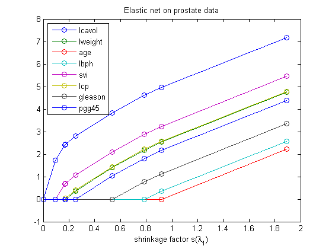
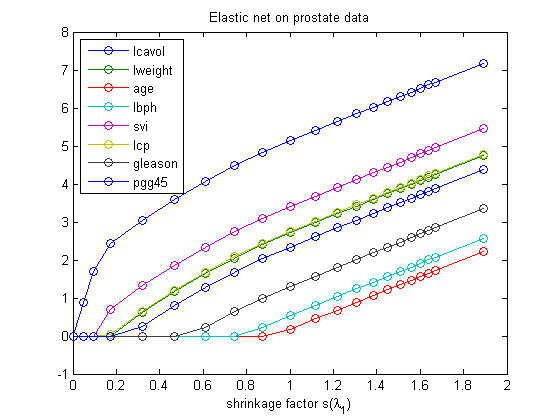

loadData('prostate');
ndx = find(istrain);
y = y(ndx); X = X(ndx,:);
X = centerCols(X);
X = mkUnitNorm(X);
y = centerCols(y);
[n p] = size(X);
lambda2 = 1000;
w0 = larsen(X, y, lambda2, 0, 1);
wLS = X\y; denom = sum(abs(wLS'));
s0 = sum(abs(w0),2)/denom;
figure(1);clf
plot(s0, w0, '-o');
title('Elastic net on prostate data')
legend(names(1:8), 'location', 'northwest')
set(gca,'ylim',[-1 8])
xlabel(sprintf('shrinkage factor s(%s)', '\lambda_1'))
printPmtkFigure elasticNetProstate
lambda1s = [logspace(3, 0, 50) 0];
lambda2s = lambda2*ones(1,length(lambda1s));
ww = elasticNetPath(X, y, [], [], lambda1s, lambda2s);
w1 = ww(2:end,:)';
s1 = sum(abs(w1),2)/denom;
figure(2);clf
plot(s1, w1, '-o');
title('Elastic net on prostate data')
legend(names(1:8), 'location', 'northwest')
set(gca,'ylim',[-1 8])
xlabel(sprintf('shrinkage factor s(%s)', '\lambda_1'))
Step Added Dropped Active set size
1 1 1
2 5 2
3 6 3
4 2 4
5 8 5
6 7 6
7 4 7
8 3 8
 